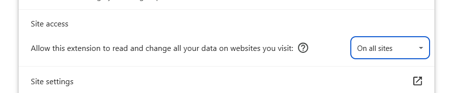

insightis-landing.vercel.app · dark · verified 2026-08-04 · pages: Home, Pricing, AI Chat, Integrations, Semantic Layer
Method: live DOM/CSS inspection + source (insightis-site/) + attention heatmaps + heuristic (Nielsen) pass. Every finding links to where to verify it.
23 findings — 2 Critical · 4 High · 9 Medium · 8 Low. Body text passes WCAG AA everywhere; the site's visual style is intentionally not redesigned in v1.
Plan cards show 50% OFF (Starter $7.99 vs $15.99 = 50%), while the FAQ/marketing elsewhere frames the saving as "per seat" without matching the 50%. The two figures must be one number.

Pricing cards — 50% OFF, $7.99 / $15.99.
Fix: single discount figure across cards + FAQ; confirm the intended % with product.
AUD-02CriticalFAQ references tiers that don't exist (Team / Enterprise)verify ↗
Cards offer only Free / Starter / Pro. Initial audit found FAQ answers naming Team and Enterprise ("14-day free trial", "available on Team and Enterprise"). Re-check the FAQ answer text (not captured in the latest fetch) — the link above opens the exact place.
Fix: FAQ names only tiers present on the page, or add the tiers.
B · Cross-page number & terminology inconsistency
AUD-05HighSame metrics stated with different numbers across pagesverify ↗
"200+ read-only connectors", "20 sources", "200+ Integrations", and the Pricing FAQ itself asks: 'What does "data source" mean?'
When the FAQ has to define your own term, the vocabulary is drifting (Nielsen #4 consistency).
Fix: pick canonical nouns (e.g. "connector" = the technical link, "integration" = the product); apply site-wide.
AUD-21HighIntegrations: "200+ connectors" alongside "+ 180 more connectors available"verify ↗
"200+ read-only connectors go live instantly" … "+ 180 more connectors available"
If 200+ are already live, "+180 more" reads as contradictory math and undercuts the headline number.
Fix: reconcile — e.g. "20 live now, 180 more coming" or drop the second figure.
AUD-15LowAccuracy stat uses two notations: "X3" vs "3×"verify ↗
Home: "X3 accuracy" · Semantic Layer: "3× more accurate on real data"
Fix: one notation everywhere (recommend "3×").
C · Copy / typography defects
AUD-17MediumHome H1 jams two sentences with no separatorverify ↗
"Talk to your data It already knows the answer"
Fix: add punctuation / line break: "Talk to your data. It already knows the answer."
AUD-16LowNumbers glued to the following word (missing space)verify ↗
"12×faster time to insight", "90%fewer data requests" (Integrations) · "3×more accurate" (Semantic Layer)
Fix: thin space / normal space between value and word.
AUD-11LowGlued word in H1 via <br> and a double space in a headingverify ↗
"Get answers in / seconds" → renders "inseconds" · "Stop arguing about which number"
Fix: no words glued by line break; collapse double spaces.
AUD-18LowInconsistent terminal punctuation across page H1sverify ↗
AI Chat: "Ask anything. Get answers in seconds." (periods) · Integrations: "Connect it all. Get the why behind numbers" (none) · Semantic Layer: "The same numbers. Every team. Any report" (none)
Fix: one heading-punctuation rule across pages.
AUD-23LowCapitalization drift within the Home statsverify ↗
"28 years of data tooling" vs "28 Years of data tooling" · "40,000+ companies" vs "40,000+ Companies"
Fix: one casing rule for stat labels.
D · Navigation & CTA
AUD-03HighBroken internal link in the no-JS static fallbackverify ↗
Source platform/ai-chat.html:193: <a href="/integrations"> → 404 (should be /platform/integrations); "Start for free" → /pricing (should be /auth/sign-up/). Live SPA render is correct; the fallback is not.
Fix: correct both hrefs in the static fallback file.
AUD-04HighNo custom 404 + dead route mappingsverify ↗
Unknown URL → raw Vercel "404: NOT_FOUND". Memory & Storage → /platform/memory-storage mapped in Header.jsx:66 / Footer.jsx:21 but the page doesn't exist.
Fix: branded public/404.html (already drafted); remove dead mappings.
AUD-19LowSecondary CTA label drifts for the same destinationverify ↗
"Explore Pricing" (Home, Integrations, Semantic Layer) vs "Pricing" (AI Chat) — both → /pricing
AUD-07MediumSub-44px tap targets (tabs, submenu)verify ↗
"Made for every team" tabs and Platform submenu ≈18–19px tall (< 24px, WCAG 2.5.8).
Fix: padding to ≥44px hit area on mobile.
AUD-08MediumLow-contrast functional captions in demo widgetsverify ↗
"Thinking" state ≈2.8:1; comparison "before" side ≈2.5:1 — below AA; meaning carried by color alone.
Fix: functional labels ≥4.5:1 / ≥12px; add a non-color cue to the "before" side (WCAG 1.4.1).
AUD-09MediumBody description paragraphs default to 14pxverify ↗
14px dominates real description paragraphs (16px rare). Labels/badges 11–13px are fine.
Fix: raise only description paragraphs to 15–16px.
F · Code hygiene
AUD-12LowInline <style> blocks with media queries inside <main>verify ↗
Each page carries per-page inline CSS — a sign of hand-patched styling.
Fix: move to stylesheets / DS tokens. No visual change.
Attention heatmap read (per page)
Home — top third holds nearly all attention (H1 + chat demo). Below the fold attention fragments across team tabs, the dimmed "before" comparison, and repeated CTA. open heatmap ↗
Pricing — eyes go to the price + "50% OFF" first; the very place the discount contradiction (AUD-01) lives.
AI Chat — demo widget dominates; low-contrast state labels (AUD-08) sit in the highest-attention zone.
Integrations — the "200+ / +180 more" numbers (AUD-21) are in the primary scan path.
Semantic Layer — "before/after" comparison is a focal point; the dim "before" side (AUD-08) reduces its legibility.
Full-page screenshots for all pages: audit/v1/evidence/heatmaps/*.png.
Heuristic evaluation (Nielsen) — summary
#2 Match system ↔ real world / #4 Consistency & standards — the dominant theme: numbers, terminology, casing, punctuation, and CTA labels all drift across pages (AUD-05, 13, 14, 15, 18, 19, 22, 23).
#5 Error prevention — dead route mapping and broken fallback link (AUD-03, 04) set traps for users and future edits.
#1 Visibility of system status — menu open/closed state not exposed to assistive tech (AUD-06).